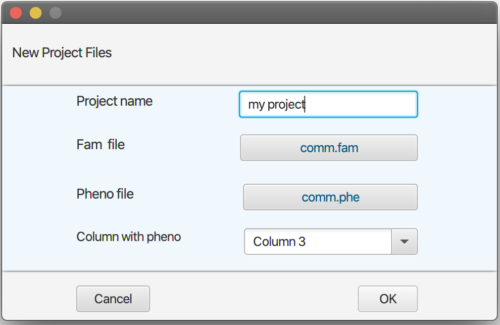
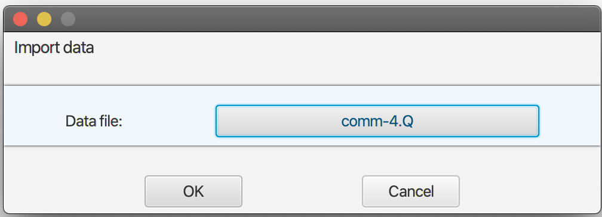
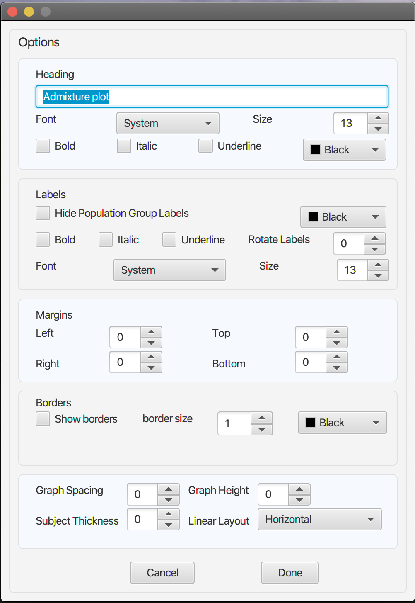
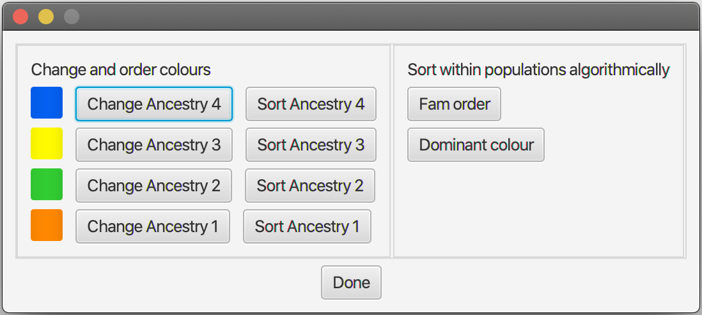

Structure Plots

Data input format
Genesis requires two input files and an optional third file as explained below
- An admixture file which contains on each line the estimated ancestral proportions of
each individual. Typically, this would be produced by a program like Admixture (e.g,
and admixture Q file), or CLUMPP, the output formats of which Genesis supports
natively. For example, an Admixture Q file for K=4 contains four columns. Provided
the input is a legal format, Genesis will automatically work out what input file it is,
and what the K value is. Instructions on using the structure2CLUMPP script which
can be used for Structure input files is described later.
- A plink-style fam file. The first two columns must uniquely identify the individuals
(the first column is usually the family identifier, the second the individual identifier).
See the plink manual for further description. The j-th line of this fam file describes the
j-th individual in the admixture file. This all that Genesis requires, although fam files
typically have other columns as well.
- Optionally, a phenotype file: again, the first two columns identify the individual, and
subsequent columns label the individuals (e.g., case/control, male/female, population
group, language, etc). The individual identifiers should be the same as in the fam file:
each individual in the fam file should also be in the phenotype file, but there is no
problem in having individuals in the phenotype file who are not in the fam file. The
order of entries in the phenotype file need not be the same as in the fam file. You could
use the same file as the fam and the phenotype file.
Inputting Data
Genesis produces structure charts by taking input from Admixture or CLUMPP tools,
together with a PLINK-style fam and optionally a phenotype file which would contain population labels.
Create a project
To input project files, click New to add the fam and phenotype file. The New button is used to create a project where all
the individual details and charts are stored. When the file input screen opens,
- Provide name of the project
- Click the Fam file button and navigate to the fam data file. The fam file is compulsory.
- Click Pheno file button and navigate to the phenotype data file. After successfully adding the phenotype file,
you will be prompted to select the column with the phenotype to be used in grouping individuals in your project.

Importing Data Files
Click the Admixture button on the menu list. On the screen that opens, click Import Data File and navigate to
the admixture data file outputted by the Admixture/CLUMPP tools. If a graph has already been plotted, and you wish
to import multiple data files, you can click the Admixture button to import the files into the same project.

Step 3: Settings Options
The Settings menu can be accessed by clicking the settings button.

- Heading
- To set/change the heading, open the settings menu and type the graph heading into the text box.
The default heading is "Admixture plot" To change its font, click the buttons and checkboxes and font color of choice.
- Population Group Labels
- To show/hide the population group labels, open the setting options menu and (un)check the Hide Population
Group Labels checkbox. To change the labels' fonts, (un)check the font modifiers in the labels section.
- The angle of the labels can also be changed by spinning the Rotate Labels button in the labels section
- You can also swap the position of population groups left/right by clicking the two population group labels to be swapped.
- Margins.
- To change the margins of the graphs, spin the values of the selectors to create space around the graphs.
- Border
- To show/hide the borders, open the setting options menu and (un)check the Show borders checkbox.
You can also increase the border size and set its color.
- Graph Size and Spacing
- To change the size and spacing of the structure plot, open the settings menu. You can select the values for the
graph height, set the thickness of each subject, and set the distance between graphs (graph spacing) at the bottom of the screen.
- Horizontal/Vertical Orientation
- To set the orientation of the structure plot, select the horizontal or vertical orientations from the bottom linear layout menu.
Interacting with the Graph
Other settings and options can be changed by interacting with the graph. Certain elements
can be clicked to view or modify their options.
- Selecting Subjects
- To select an individual subject on the structure plot, click on the subject on the plot.
This will bring up a subject menu where you can view the data about the subject (from
the phenotype data file) and gives the option to hide the subject from the plot.
- Changing the colours and order of colours and individuals
-
Right click anywhere on a graph and select Population Group Options. The menu below shows:

- This option allows you to:
�- Change colours (e.g., change red to blue)
�- Change the order of the colours (e.g., on a horizontal chart, move the red segments
from below the blue segments to above the red segments
�- Order the individuals within a population group by an ancestral group.